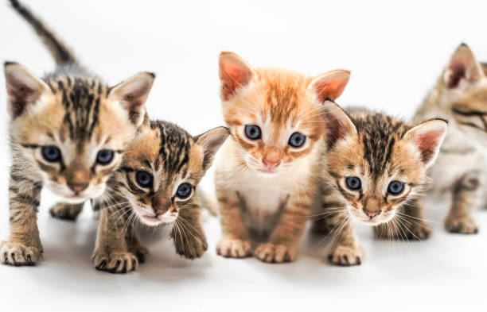
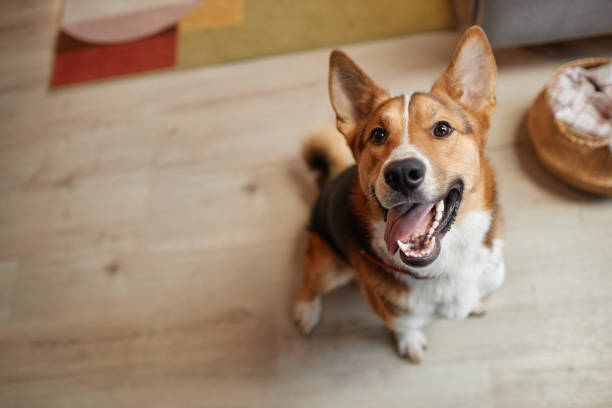
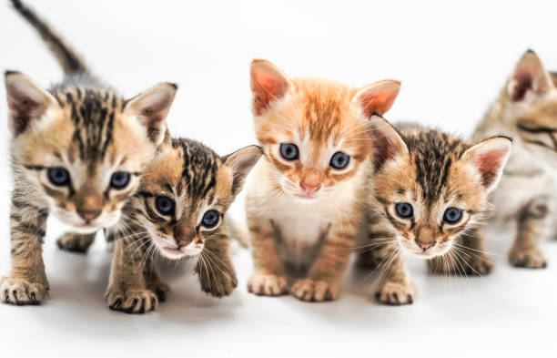
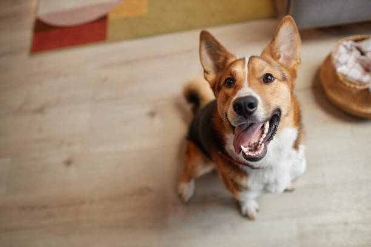
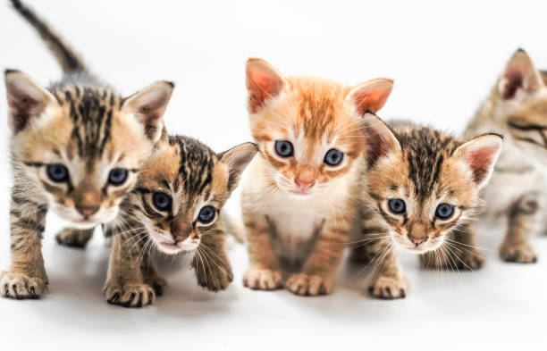
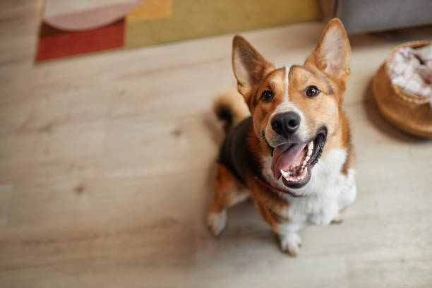

Making Cities Paw-some! 🐾✨
Join the Pet-Friendly Movement and transform your community!
 



Join the Pet-Friendly Movement and transform your community!



Respect for Animal Life, Prevention of Animal Suffering, Protection from Abuse and Exploitation.
Accessible vet care, safe public spaces, and awareness campaigns. Regulations ensure pets coexist safely with the community.

Businesses, residents, and NGOs ensure regular food for strays through community stations and municipal programs.
Well-maintained parks, walking trails, and dedicated off-leash areas. Safe and engaging spaces for pets to socialize.
Help make your city more pet-friendly! Join us in making a difference.
Through educational programs, seminars, and workshops, we aim to promote responsible animal ownership and raise awareness about stray animal welfare.
Advocating for policy change with the help of government officials and policymakers to ensure better protection and care for all animals.
Our joint efforts include adoption drives, vaccination camps, and public awareness programs with the help of NGOs and different organizations.
Providing essential resources for animals, including food, shelter, and medical care to ensure their well-being and safety.
 🐕 Buddy
🐕 Buddy